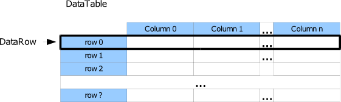

KNIME uses DataCells to represent data (each DataCell holds one single entity, for instance a floating point value). An array of DataCells makes up a DataRow. There are a couple of default implementations of DataCell that hold specific types of data such as StringCell, IntCell, and DoubleCell. The entire data that is passed along nodes in the workflow is exposed in a DataTable, containing an usually unknown number of (equal-length) rows. All elements in a column must be compatible to the type that is assigned to the column, e.g. they must all be numeric or all must be a strings. The following figure sketches a DataTable.

The meta information to a DataTable (number of columns, column specific information) is available through the DataTableSpec (acessible via DataTable.getDataTableSpec) which consists of a set of DataColumnSpecs comprising a specific name (a string), type (a DataType, see below), and some (optional) properties such as domain information (mininum, maximum, possible values), a color handler, and so on for each of the columns. For further details on these specific classes see their class description and the FAQ on how to use them.
KNIME allows to define customized types of data, e.g. a DataCell that carries a representation of a molecule. Specialized data types bring along their own renderer (e.g. to display the molecular structure), a customized icon (that is displayed, for instance in a column header to recognize the column's type), and a comparator. In order to implement a new type in KNIME, generally you have to create two different classes/interfaces:
public static final UtilityFactory UTILITYThe class UtilityFactory has methods to retrieve specific information to this type implementation. If no such a member is provided, the reflection mechanism will use the information from the super interface, i.e. DataValue (though, no customized information is available in this case). It is highly recommended to define the UtilityFactory as an inner class of the interface. The new interface should be similar to:
public interface MyDataValue extends DataValue {
/** Derived locally. */
public static final UtilityFactory UTILITY = new UtilityFactory() {
...
};
/** The interface methods. */
MyValue getMyValue();
}
public static final Class<? extends DataValue> getPreferredValueClass()
Implement this method and return a DataValue
class that your DataCell is implementing. If
no such method exists, the order on the implemented values is undefined.java.io.Serializable.
Since standard serialization is slow, we support reading and writing
through an appropriate factory, called
DataCellSerializer.
KNIME will check for a static method in your
DataCell implementation:
public static final DataCellSerializer<MyCell> getCellSerializer()
and if such a method exists, it will use the returned serializer.
Note, you also need to have the correct return type, i.e. the
generic paramater of the DataCellSerializer
must be your DataCell class. The skeleton for the new DataCell will look like:
public class MyCell extends DataCell implements MyValue, StringValue {
public static final Class<? extends DataValue> getNativeValueClass() {
return MyValue.class;
}
public static final DataCellSerializer<MyCell> getCellSerializer() {
return new DataCellSerializer() {
public void serialize(MyCell cell, DataOutput output) throws IOException {
...
}
public MyCell deserialize(DataInput input) throws IOException {
...
return new MyCell(...);
}
};
}
...
}